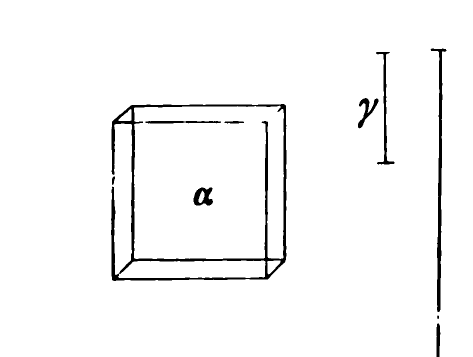

Proposition 9: Equilibrium on the Inclined Plane¶
Synagoge Book VIII, Proposition 9 (Hultsch III, pp. 1054–1058) · Critical English Edition


Let the plane through the straight line \(MN\) be the underlying plane, and let that through \(MK\) be inclined to it at the given angle \(KMN\); let some weight \(A\) be moved by the power \(\Gamma\) upon the underlying plane, and let a sphere equal in weight to \(A\) be conceived about center \(E\), and let it lie upon the plane through \(M, K\) touching it at point \(\Lambda\), as is shown in the third theorem of the Sphaerica. The joined line \(E\Lambda\) will therefore be perpendicular to the plane (for this too is proved in the fourth theorem of the Sphaerica), so that \(E\Lambda\) is also perpendicular to \(KM\). Let the plane through \(KM\) and \(E\Lambda\) be produced and make as section in the sphere the circle \(\Lambda H\Xi\), and through center \(E\) let \(E\Theta\) be drawn parallel to \(MN\), and from \(\Lambda\) let \(\Lambda Z\) be drawn perpendicular to it. Since, then, angle \(E\Theta\Lambda\) is given (for it is equal
f. 0065 · p. 1056to the given [acute] angle \(KMN\)), angle \(E\Lambda Z\), which is equal to \(E\Theta\Lambda\) (for triangle \(E\Theta\Lambda\) is equiangular with \(E\Lambda Z\)), is also given; therefore triangle \(E\Lambda Z\) is given in species. Therefore the ratio of \(E\Lambda\), that is of \(EH\), to \(EZ\) is given; and therefore the ratio of the remainder \(ZH\) to \(EZ\) is given. Let it be made, then, as \(HZ\) is to \(ZE\), so weight \(A\) is to \(B\), and power \(\Gamma\) to \(\Delta\). Now the power of \(A\) is \(\Gamma\); therefore the power of \(B\) in the same plane will be \(\Delta\). And since as straight line \(HZ\) is to \(ZE\), so weight \(A\) is to \(B\), if weights \(A, B\) be placed about centers \(E, H\), they will balance when suspended from point \(Z\) [or resting upon a fulcrum \(\Lambda Z\) upright to the horizon]. Now weight \(A\) lies about center \(E\) (for the sphere is in its stead); therefore weight \(B\) placed about center \(H\) will balance the sphere, so that the sphere does not descend on account of the inclination of the plane, but remains uninclined, just as if it happened to be standing on the underlying plane. Now it was moved in the underlying plane by power \(\Gamma\); therefore it will be moved in the inclined plane by both power \(\Gamma\) and that of weight \(B\) together, that is power \(\Delta\). And power \(\Delta\) is given.
18. Thus the geometrical analysis of the problem has been demonstrated; and in order that we may also make the
f. 0067 · p. 1058construction and demonstration upon an example, let weight \(A\) be, say, \(200\) talents, drawn in the plane parallel to the horizon by the moving power \(\Gamma\), that is, let the movers be \(40\) men, and let angle \(KMN\), that is \(E\Theta\Lambda\), be two-thirds of a right angle; then the remainder \(Z\Lambda\Theta\) is one-third of a right angle. And \(E\Lambda\Theta\) is right; therefore \(E\Lambda Z\) is also two-thirds of a right angle; of such parts, then, as four right angles are \(360\), \(E\Lambda Z\) is \(60\), and in the circle circumscribed about the right-angled triangle \(EZ\Lambda\), the arc upon \(EZ\) will be \(120\) of such parts as the circle is \(360\), and \(EZ\) itself will be very nearly \(104\) of such parts as \(E\Lambda\), the diameter of the circle, is \(120\); for these things are clear from the table of chords in a circle according to Ptolemy, which stands in the first book of the Mathematica. Therefore the ratio of \(E\Lambda\), that is of \(EH\), to \(EZ\) is that of \(120\) to \(104\); and therefore the ratio of the remainder \(HZ\) to \(ZE\) is that of \(16\) to \(104\). And this same ratio is that of weight \(A\) to \(B\), and of power \(\Gamma\) to \(\Delta\); and weight \(A\) is \(200\) talents, while the moving power is \(40\) men; therefore weight \(B\) will also be \(1{,}300\) talents, and power \(\Delta\) will be \(260\) men (for as \(16\) is to \(104\), so is \(200\) to \(1{,}300\) and \(40\) to \(260\)). Therefore, while weight \(A\) of \(200\) talents is moved in the plane parallel to the horizon by the \(40\) men, the same weight will be moved by both the aforesaid men together, that is by \(300\) in all, in a plane inclined to the horizon, angle \(KMN\) being supposed two-thirds of a right angle.